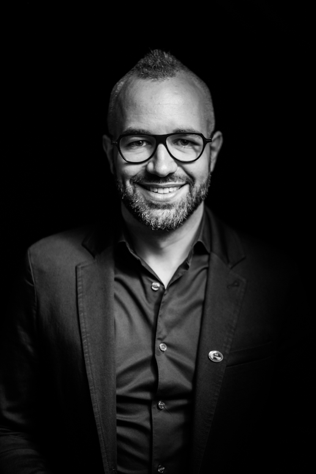

About Adam

Adam Pantanowitz is an electrical and biomedical engineer, entrepreneur, scientist, motivational speaker, academic, philanthropist and artificial intelligence expert.
You can find him working in a coffee shop, lecturing medicine or engineering, hosting a meeting, developing a new app or software, founding a company, presenting at a conference or giving a motivational talk. His areas of expertise include artificial intelligence, ethics, biotechnology, engineering and robotics. With 10 years of experience, Adam has used his skills as a technologist to disrupt and innovate within the biomedical sphere.
He is also a Chartered Engineer (CEng (UK)) , a Professional Engineer (Pr Eng (SA)), a member of South African Institute of Electrical Engineers (SAIEE (SA)), a Senior Member of the Institute of Electrical & Electronic Engineers (SMIEE)a registered European Engineer (EUR ING (Europe)), an International Professional Engineer and Fellow of the Institute of Engineering & Technology in the UK(IntPE), and a Chartered IT Professional (CITP (UK).
Adam is the co-founder of multiple startups such as AURA a mobile security app, Tariffic a platform to best predict a customer's preferred mobile plan, Resolute Robotics an online education forum to promote engineering and robotics , and think3dots a start-up focused on biotechnology, AI and engineering.
Adam acted as CTO of VATIT, the world’s largest VAT Reclaim business (2015 - 2017). He also consulted extensively to three of South Africa's major banks, on matters at the junction of technology and business.
His impact has been featured in Forbes, Ozy and Futurism, together with an abundance of academic journals. His work has resulted in 4 patents as well as the media-interest piece “Brainternet”. Adam's work and projects have been re-released in hundreds of languages, making him a global phenomenon.Carte Blanche, Google Scholar and many other media platforms have captured his projects, bringing spotlight to all that Adam has done for science, society and human knowledge. Other projects include an eye-controlled wheel chair, a non-cognitive
brain transmission channel using light, a thought-controlled robotic arm with a light-invoked on/off switch, a hands-free controlled surgery interaction system, a
CPR monitoring system, a computer-based sign language interpreter, and an eye-
controlled cursor using the vestibulo-ocular reflex.
Adam's own personal journey allowed for him to engineer his way around certain challenges, leading him on a most successful path. From a young age Adam has pursued the act of deconstructing technology in order to build a better and brighter future, he continues to focus on futurism, technological innovations and education throughout.